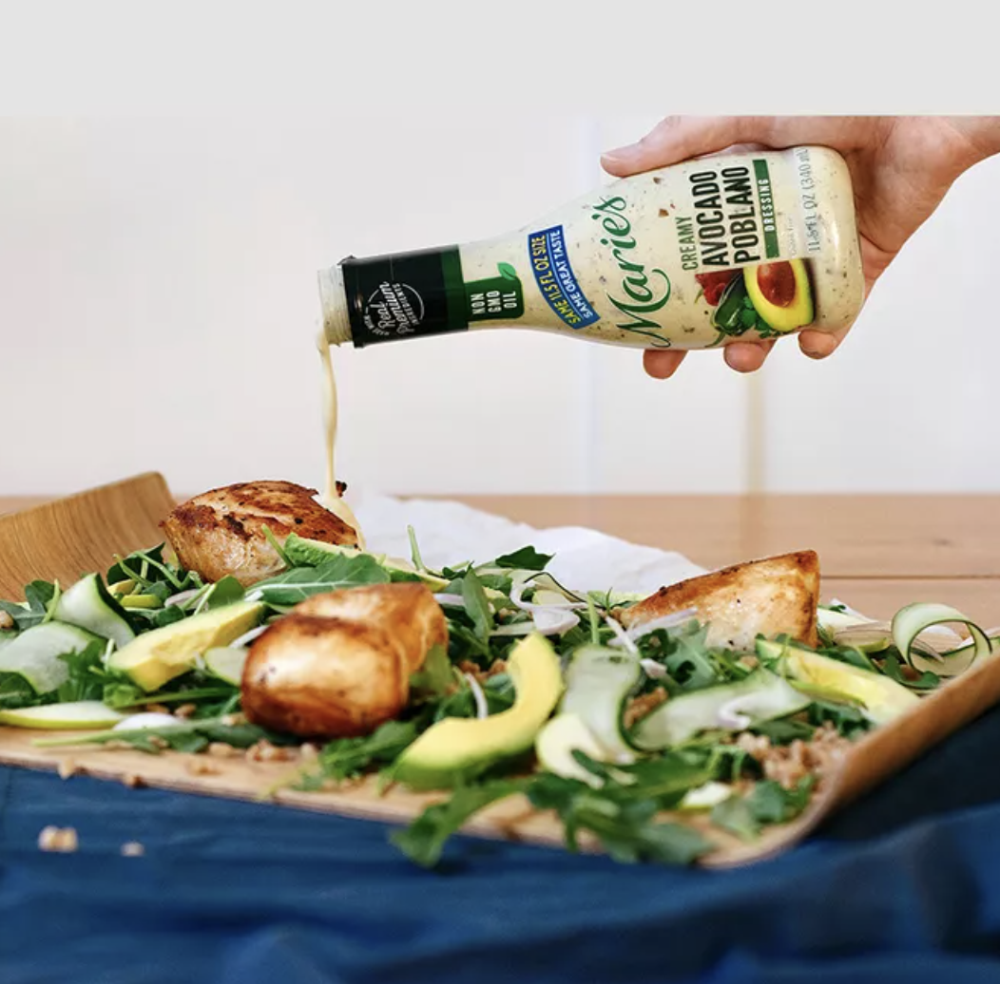

Green Chicken Salad

Description
Pan-fried chicken breasts are tossed with arugula, farro, apple, and avocado in this satisfying salad featuring Marie's® Creamy Avocado Poblano dressing.
Ingredients
- ½ cup Marie's® Creamy Avocado Poblano dressing
- 2 chicken breasts
- Salt and pepper
- 2 tablespoons olive oil
- 5 cups arugula
- 1 cup cooked farro
- 1 cucumber, shaved
- 1 Granny Smith apple, thinly sliced
- 1 shallot, thinly sliced
- 1 avocado, diced
Steps
- Season chicken breasts with salt and pepper. Add olive oil to a large pan and cook chicken on medium heat for approximately 12 minutes, about 6 minutes per side. Let chicken rest for 5 minutes before plating.
- Using a large platter or bowl, create a bed of arugula. Sprinkle farro and the shaved cucumber, sliced apple, and sliced shallot over arugula. Place chicken breasts, whole or cut into pieces, on top. Garnish with slices of avocado. Evenly drizzle the salad with Marie's Creamy Avocado Poblano dressing.
Return To Home